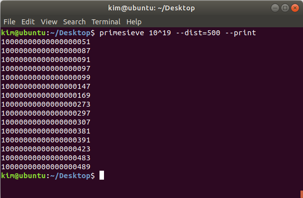

Screenshots
Counting primes and prime k-tuplets on Windows 10.

Printing prime 4-tuplets on macOS.

Stress testing a quad core CPU with the primesieve GUI application (Linux).

Counting primes and twin primes using the primesieve console application on Windows 10.

Printing primes on Linux using the primesieve console application.
